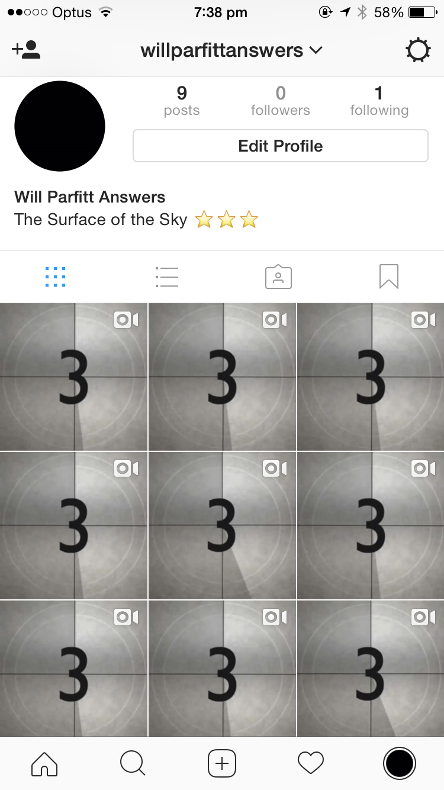
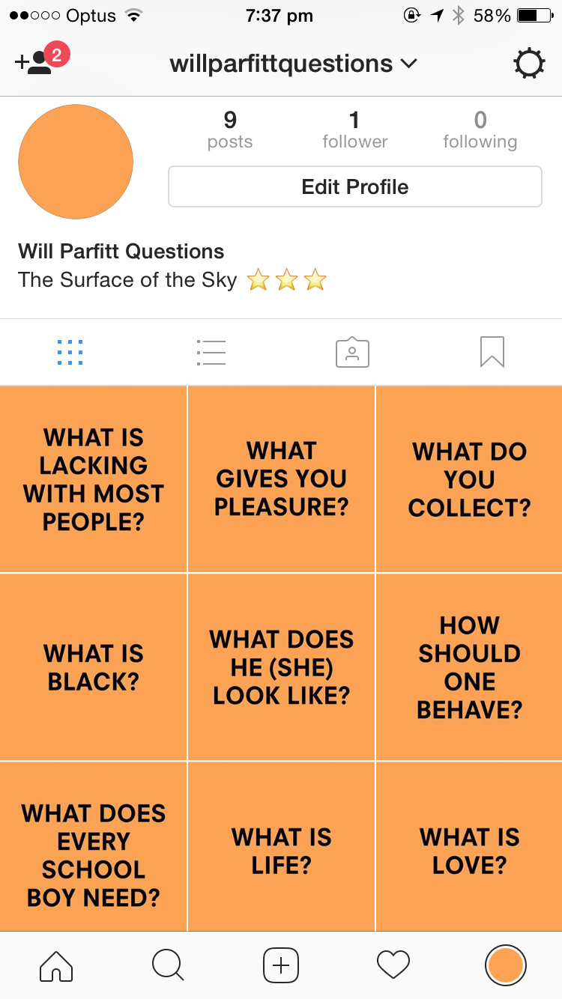
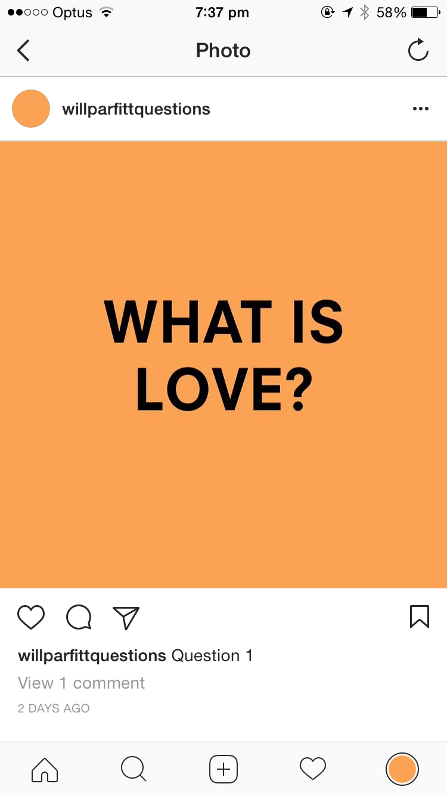
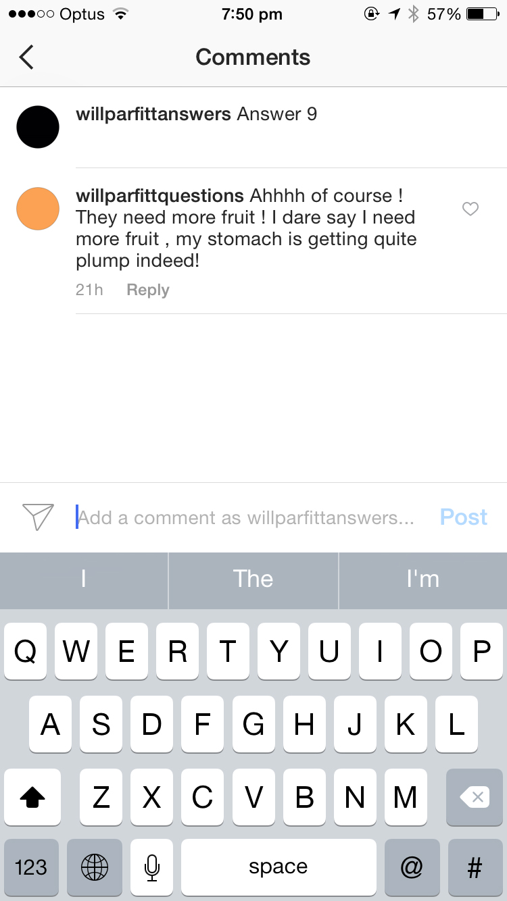
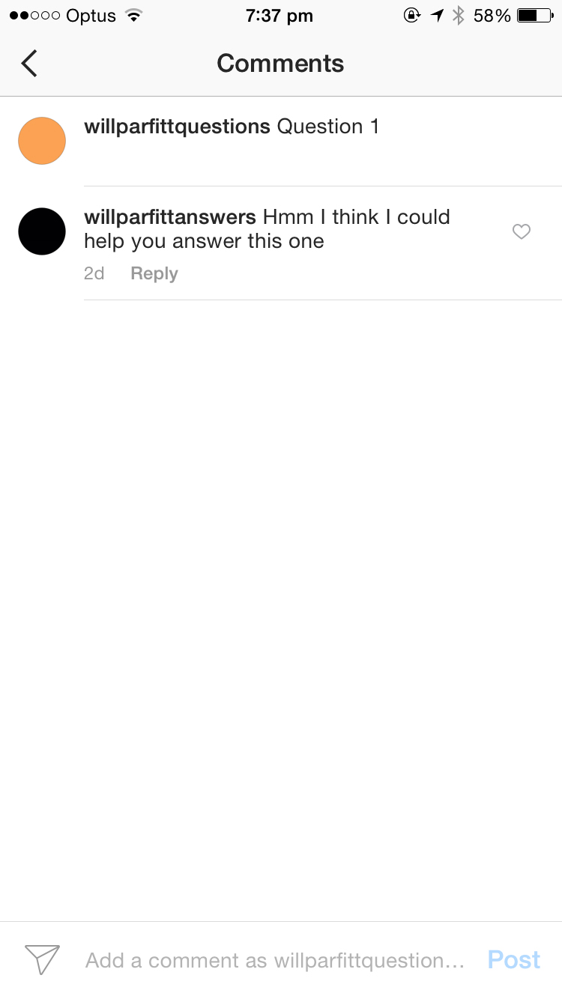

WHAT IS LIFE? AN OPERA OR MUSICAL COMEDY
WHAT IS LOVE? SOMETHING. INVISIBLE
WHAT DOES EVERY SCHOOLBOY NEED? SOMETHING RARE
HOW SHOULD ONE BEHAVE? A PART OF A TRAIN
WHAT DOES HE (SHE) LOOK LIKE? SOMETHING A FARMER NEEDS
WHAT IS BLACK? AN ADVERTISING SLOGAN
WHAT DO YOU COLLECT? STAR OR CONSTELLATION OF STARS
WHAT GIVES YOU PLEASURE? A PUBLIC INSTITUTION
WHAT IS LACKING WITH MOST PEOPLE? A FRUIT
(A series of sentences found on a set of cards
intended for a childs question and answer game; the answers seem only too apparent.
Found in Cornwall September 1969)
________________________________________________________________________________
The found poem is essentially a conversation between a child and an adult. One set of cards would have the question, and one card game would have the answer.
It would be fun and amsuing seeing what answer matched with what question. To represent this dialogue of going back and forth, I propose that Idea 1 is created on Instagram.
The concept being that one instagram posts the question, and then the other instagram posts the answer. I think it would be interesting to use instagram as a way of speaking to someone as it is such a social and open network, and having a dialogue going across the platform in th form of posts is quite unusual.
Below are two screenshots of the homepages of the two instagram accounts. I have made them have two distinct voices, which creates the two voices from the poem.


________________________________________________________________________________
These two screenshots are close ups of two instagram posts. The Orange question is simply a statc jpeg. However, the answer instgram account is a short clip, which only uses old 1960's footage to answer the question. I have only used 1960's footage in the clips because the poem is from the 1960's.

________________________________________________________________________________
The two instagram accounts also interact with one another. As you can see below, I have created dialogue between the two accounts and they discuss the questions and and answers together.


Will Parfitt Questions: https://www.instagram.com/willparfittquestions/?hl=en
Will Parfitt Answers: https://www.instagram.com/willparfittanswers/?hl=en
Original document link: http://ubumexico.centro.org.mx/text/vp/parr_found_poems_1972.pdf